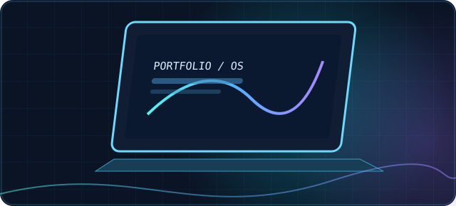
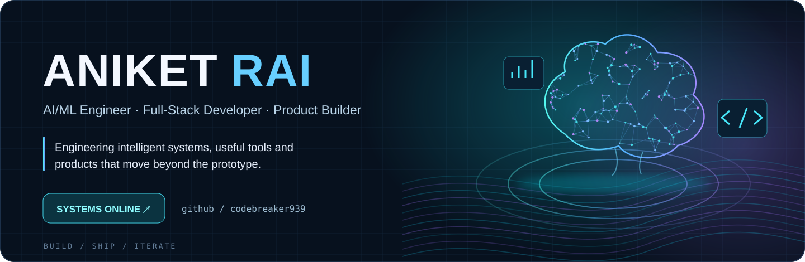
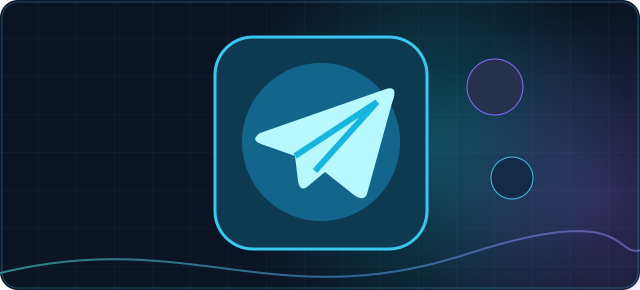
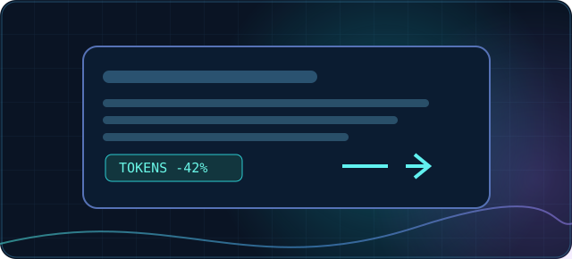
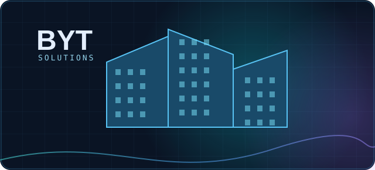

~/ codebreaker939 / profile SYS.README

// 01 / SELECTED WORK
Projects worth opening.



Selected work, not inflated metrics. Project links and statuses are marked as verified, in development, or awaiting a repo URL.
// 02 / EXPERIMENTAL ZONE
Interactive playground.
DEMO MODE / NO LOGIN
Choose a module.
Run an experiment.
Learn by doing.
MODULE_01 / DEMONSTRATION
SIMULATED RESPONSESAsk the engineering console
Prewritten architecture guidance powered by local matching — not a live AI model.
ENGINEERING CONSOLE
Welcome to the dev lab. Try a question about Telegram bots, AI agents, RAG, or full-stack apps.
MODULE_02 / ISOLATED RUNTIME
BROWSER SANDBOXJavaScript code runner
Edit a small JavaScript snippet and execute it inside a sandboxed iframe.
experiment.js JAVASCRIPT
Ready to execute.
OUTPUT / CONSOLE
// Run code to see output here
Runs locally in your browser with an isolated origin. No Node.js APIs, files, or backend access.
MODULE_03 / LOGIC PUZZLE
PLAYABLE CHALLENGEBuild an agent circuit
Arrange the four stages of a basic tool-using AI agent in the correct order.
Mission: route one request through the system.
Tap a module below to wire it into the next empty slot.
01 EMPTY
02 EMPTY
03 EMPTY
04 EMPTY
AVAILABLE MODULES / SELECT IN ORDER
Circuit idle. Connect the four nodes.
MODULE_04 / PROFILE CLI
INTERACTIVE CLIExplore through the terminal
A command-based guide to my projects, skills and engineering focus.
aniket@devlab — zsh
ANIKET/RAI developer console v1.0
Type help to see available commands.
All modules run locally
No login · No API keys · No telemetry
// 03 / TOOLKIT
CAPABILITIES & AREAS OF LEARNINGTechnical stack.
AI / ML
Python · ML fundamentals · LLM integrations · FastAPI
Frontend
React · JavaScript · HTML · CSS · MERN
Backend
Node.js · Express · REST APIs · Python
Databases / Tools
MongoDB · SQL · Git · GitHub · Postman
CURRENTLY EXPLORINGSpring AIAgentic AICloud architectureSystem design